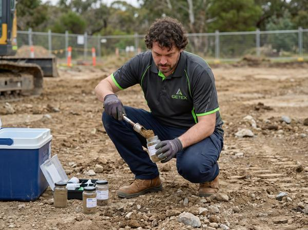
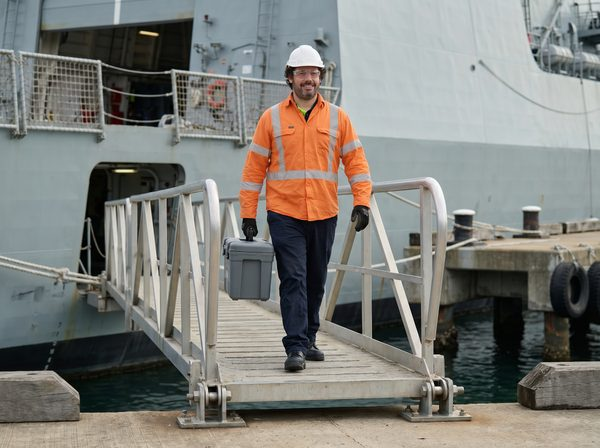
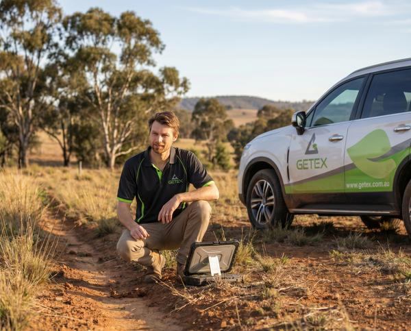

Hazardous materials, contaminated land & occupational hygiene consultancy.
Delivering assessment, remediation and validation across complex sites since 2005.
Delivering assessment, remediation and validation across complex sites since 2005.
Asbestos surveys, air monitoring, clearance and hazardous materials management.
Risk-based investigation, remediation and validation. Soil, groundwater and landfill gas assessment.
Exposure monitoring and air quality assessment across dust, silica, noise, lighting, fumes and contaminants.
We work across public assets, sensitive environments, construction projects and property portfolios.



We work with integrity, adapt with flexibility, and hold ourselves to quality in everything we do.